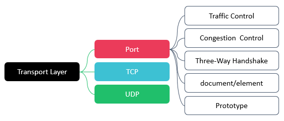
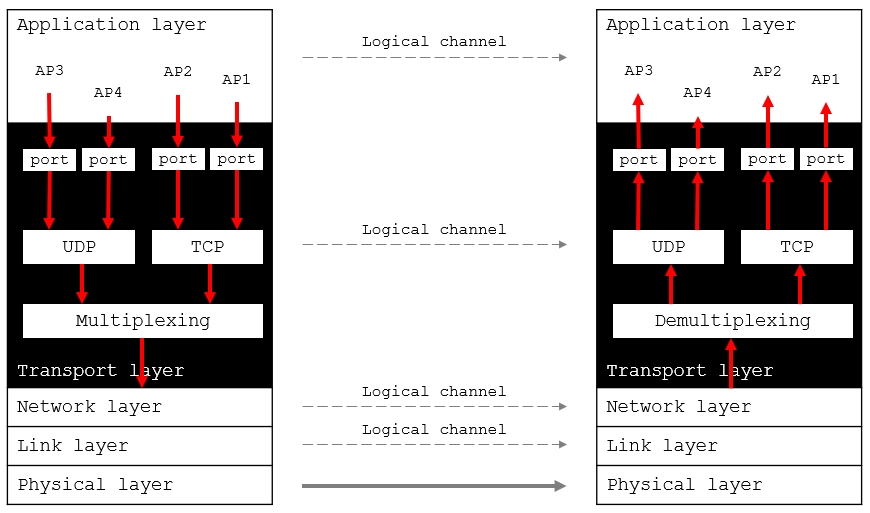

端：应用进程，逻辑层面
计算机通信实际上应用进程之间的通信
运输层是应用进程通信的桥梁
通过端口实现精准寻址，利用 TCP/UDP 提供灵活的服务选项
它不仅完成端到端的数据传输，还承担可靠性保障、资源协调与网络保护等关键任务，是网络体系结构中承上启下的核心层次
| UDP | TCP | |
|---|---|---|
| 连接方式 | 无连接（无需握手） | 面向连接（建立连接、通信、释放连接） |
| 可靠性 | 不可靠（无确认、无重传） | 可靠（序号、确认、超时重传、连接管理、流量管理、拥塞管理） |
| 开销 | 小（首部仅8字节） | 大（首部20+字节，含控制字段） |
| 适用场景 | 实时音视频、广播、DNS | 网页浏览、文件传输、邮件等 |
复用 Multiplexing：发送端多个应用进程的数据通过运输层封装，共享同一网络连接
分用 Demultiplexing：接收端根据目的端口号将数据准确交付给对应应用进程

通过校验和检测传输错误
TCP还提供差错纠正机制